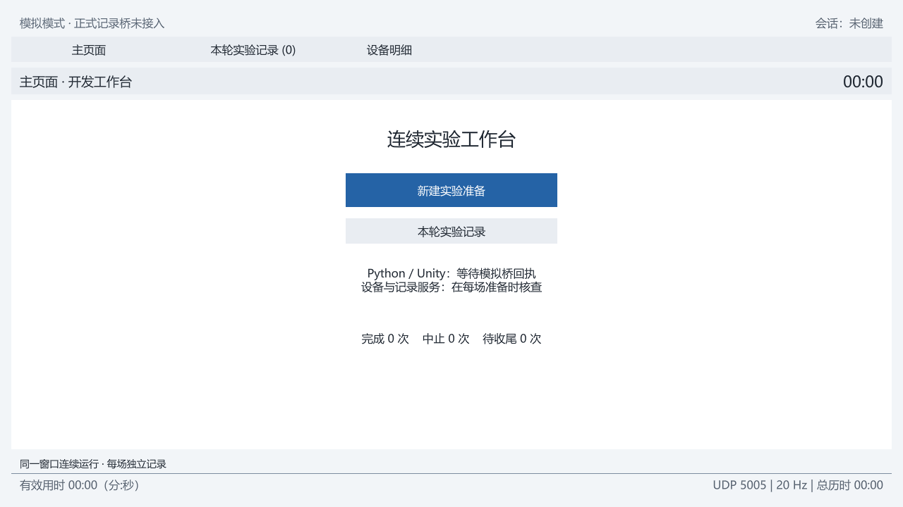
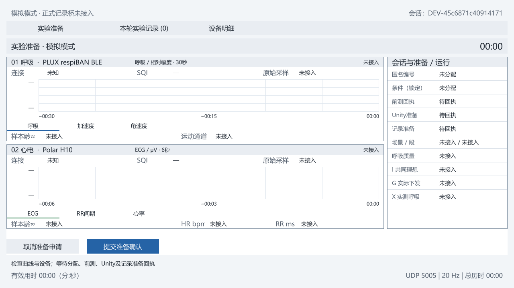
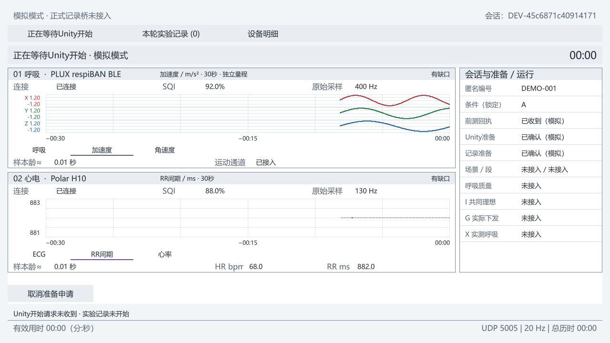
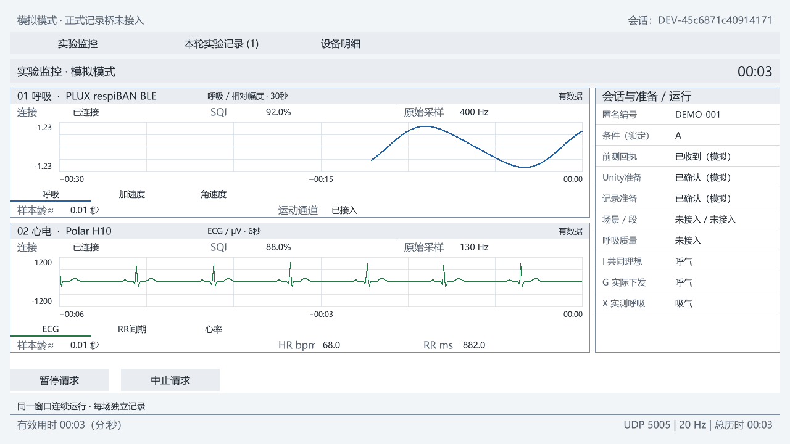
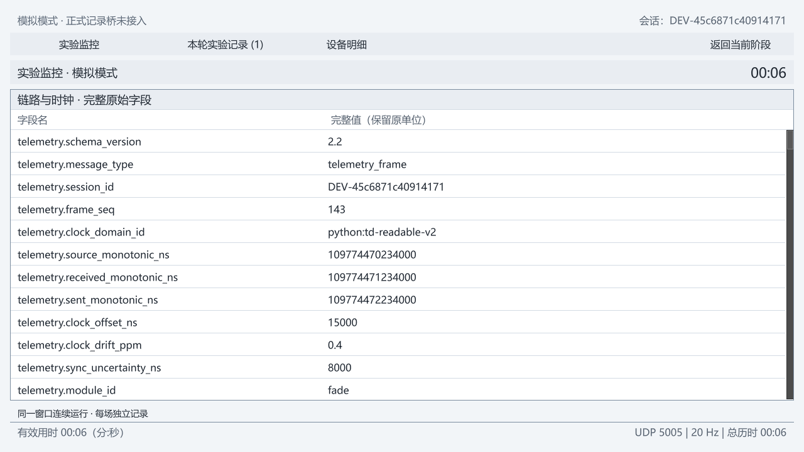
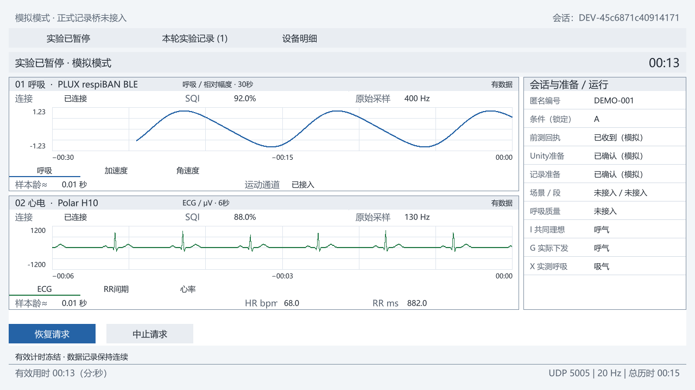
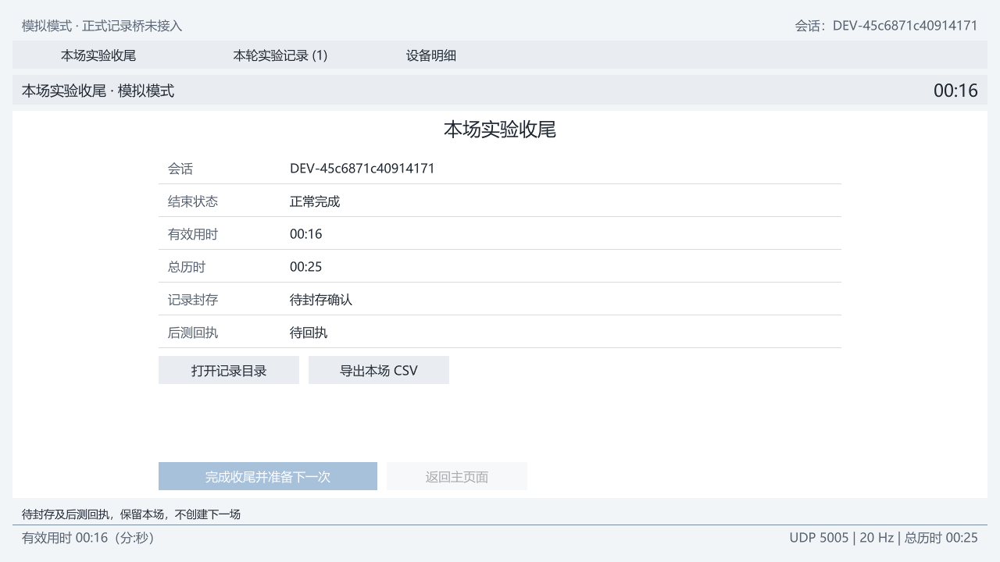
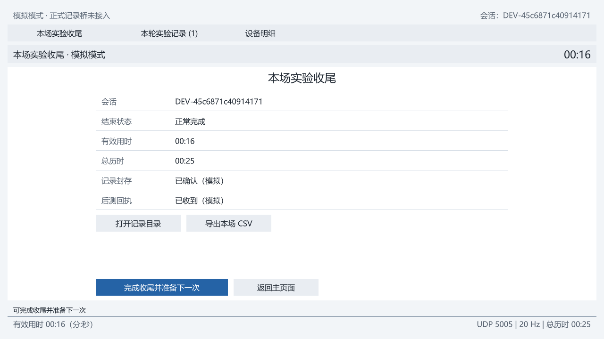
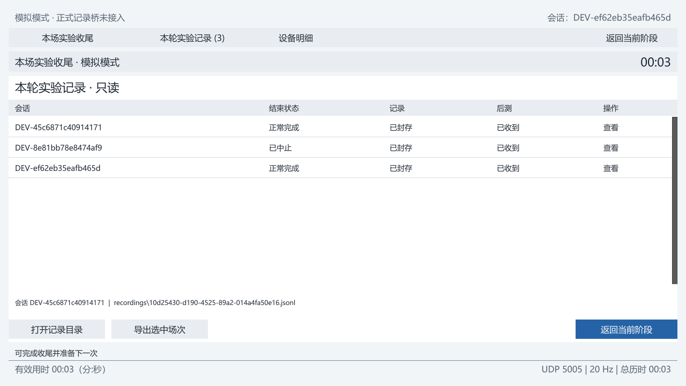

TD工作台逐页审查
当前A主题 · 本轮重新捕获原生界面 · 2026-10-12
基础分区和单窗口流程可保留；优先改善记录状态、运行上下文、历史对象和按钮许可，再整理信息层级。以下图片是实际截图，建议尚未实施。
1. 主页面 入口清楚，状态摘要不足


保留：准备入口、历史入口、完成/中止/待收尾计数。
问题：标题与导航重复；“Python/Unity等待模拟桥回执”偏实现语言，没有明确的就绪或阻断摘要。
调整：把空间用于服务与设备就绪、上一场结果、待收尾记录。保持一个明显的准备动作。
2. 准备 字段已有，待办和许可表达需修正


问题：十行平均排列，没有突出哪些条件仍缺；预期尚无数据也显示大片“未接入”。
调整：准备清单优先；明确已完成/等待/阻断，按钮禁用外观一致，原因贴近按钮。
保留：匿名编号和条件只读、准备期可预览设备数据、准备期不写实验记录。
3. 等待开始 开始链路存在，主视觉未服务当前任务


问题：最重要的“开始请求是否收到、记录是否开始”主要靠页角文字；主体与运行页接近。
调整：突出“准备完成 → 等待Unity → Python确认 → 记录开始”的当前状态；曲线保持预览用途。
缺口表达：窗口尚未收满与已采集后的缺失必须能区分。
4. 运行 需优先修正记录与上下文


优先修正：主要状态条应明确实际记录状态、匿名编号、天气/位置/流程段、有效与总时间。
信息重排：开始后收起准备回执；右侧集中显示当前引导与呼吸估计。
图形：常用波形提高可读高度；量程模式明确；HR/RR当前值增强。
I/G/X：中文名称及步骤/相位信息优先，不能只用三行“吸气/呼气”表达所有情况。
5. 设备明细 入口名称与内容不一致


问题：首屏无法快速回答哪个设备、哪个信号或哪条记录出了问题。
调整：默认按设备、质量、记录、链路分组；原始字段可搜索、展开、复制。
保留：完整值和原始时钟精度仍有工程核查用途，放进调试层。
6. 暂停 行为正确，视觉状态需加强


保留：有效计时冻结、数据持续记录、回执后恢复的行为。
调整：“已暂停”与“记录仍进行”就近可见；两个时钟相邻。
操作：简化“恢复请求”为“恢复”，处理中状态贴近按钮。中止与恢复明确区分。
7. 收尾 门控正确，完成结论与待办需集中




保留：封存、后测是独立事实，未齐时不能进入下一位准备。
问题：重复大标题、重复时钟和大块空白；主要动作与待办隔离。
调整：集中呈现结果、缺项、导出和下一动作；简化长按钮文案。
中止：同样保留部分记录与收尾，明确结果及原因；不把中止自动当作应删除的数据。

8. 历史 选择对象与导出需优先修正


问题：没有明显选中行；主列是长UUID，缺匿名编号、时间、条件和时长。
代码风险：未选择历史记录时导出会回退当前场次，本轮未点击该负向情况。
调整：选中对象高亮；摘要和导出使用同一对象；未选时禁用导出。
信息：用匿名编号、开始时间、条件、有效时长和封存/导出辨认记录；完整路径移到详情。